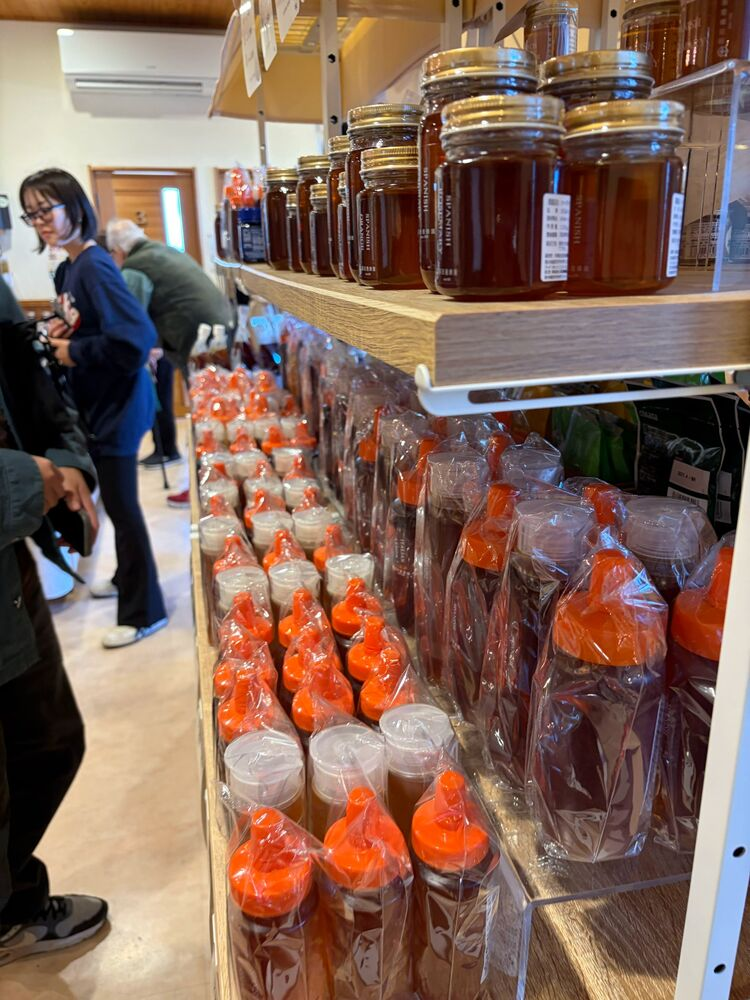
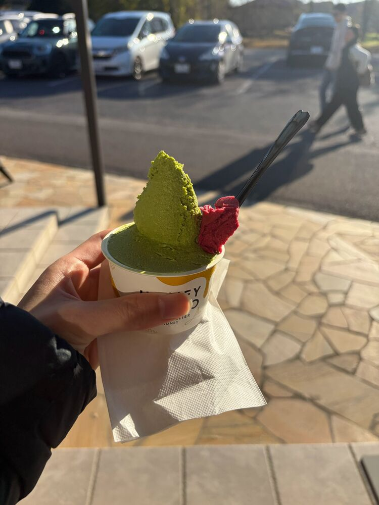

In Japan, the best places are often not famous. They are old.
On our Tochigi trip, we visited Kuroda Yohoen (黒田養蜂園), a honey shop in Kanuma. The sign says it was founded in Taisho 9 — that is 1920. One family has kept bees in Tochigi for more than 100 years.
A different way to count years
Japan counts years by the emperor's era. Taisho (大正) was 1912–1926, then Showa, Heisei, and now Reiwa. When an old shop sign shows an old era name, it means: this shop has a long story.
Taste before you buy
They have more than 20 kinds of honey, and you can taste them. I tasted one, then another, then another… I lost count.
- Tochi no ki (栃の木) — horse chestnut honey. The horse chestnut is Tochigi's symbol tree.
- Acacia — light and clean.
- Ashio honey — from the mountains of Tochigi.
- Hyakka-mitsu — “one hundred flowers” honey.

Shun and the gift culture
Japan loves shun (旬), the best season for each food. Each honey is like a small piece of one season. Outside, a blackboard said “お歳暮 — noshi, wrapping, shipping.” Oseibo is the end-of-year thank-you gift, and noshi is the special paper on a gift. Honey is a very popular choice.
Gelato next door
Next to the shop there is a sweets shop with gelato made with their honey and Tochigi milk. Flavors like matcha and salt. Eating gelato in November, in a puffy jacket, in the countryside. That is real Japan.

Honey doesn't just come from bees. It comes from one mountain, one season, and one family.
Want to visit? The full practical guide (location, hours, the closed day, access, and my tips for tasting and gift wrapping) is for my supporters on Buy Me a Coffee (from $3/month): read Kaho's practical guide. Your support helps me keep exploring rural Japan and sharing the places tourists don't see. Thank you 🌾